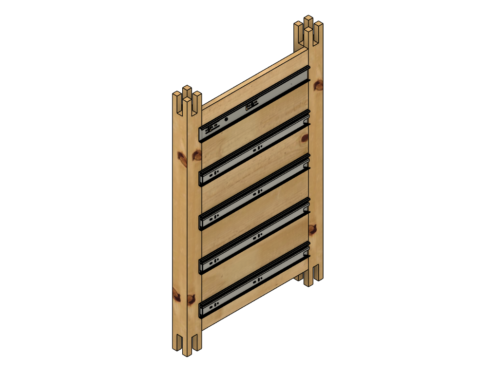
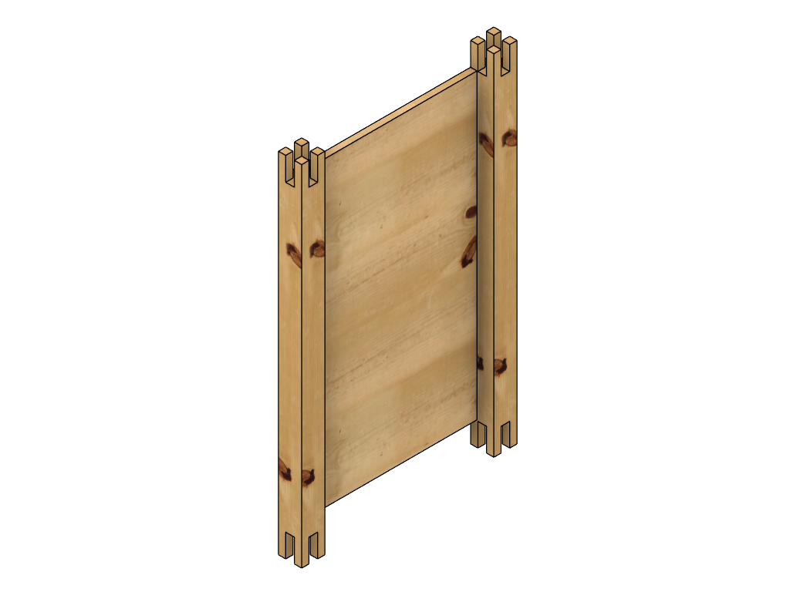
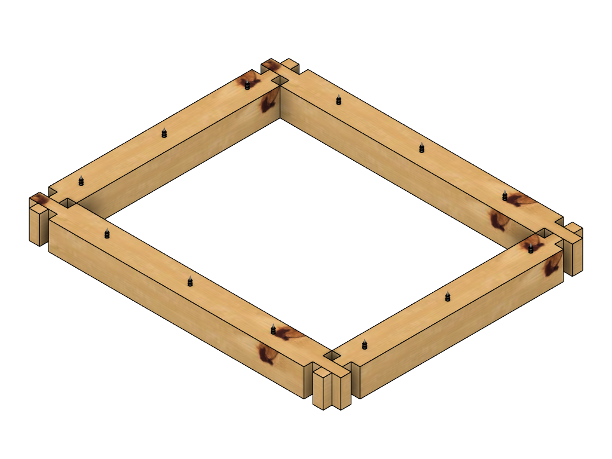
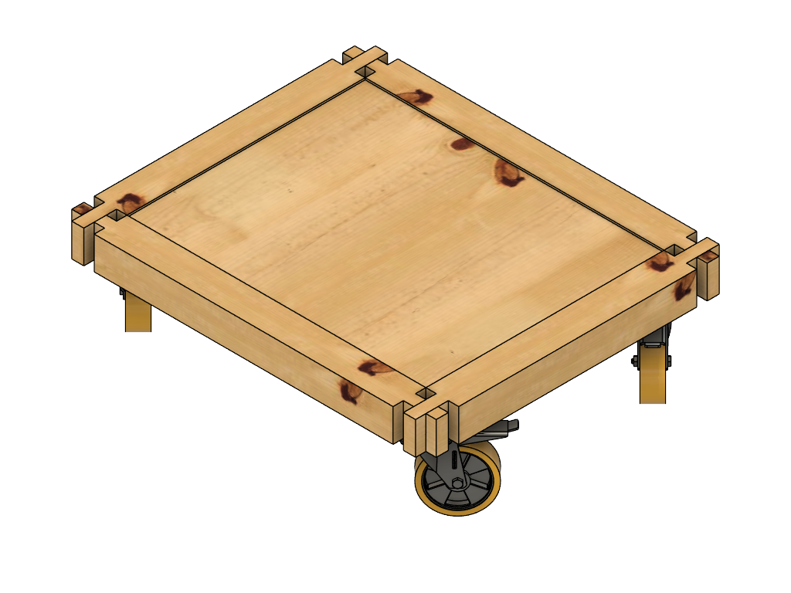
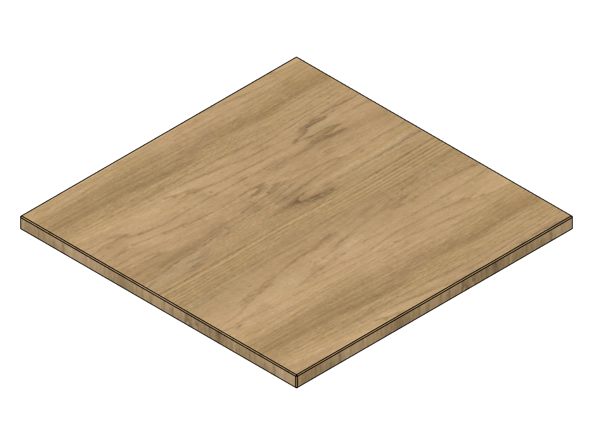
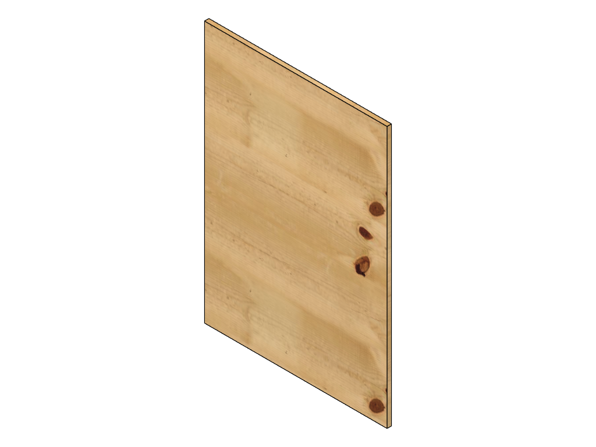
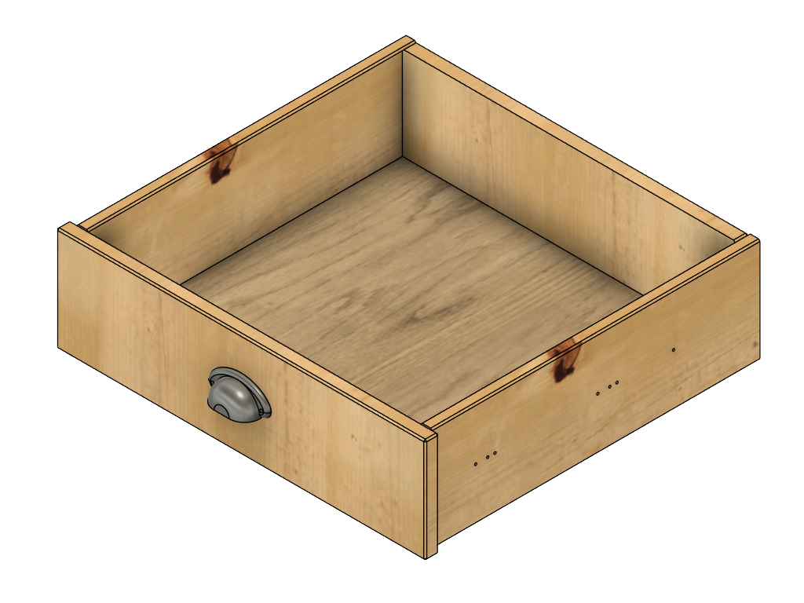

Die Idee
Die Basis für eine ganze Werkstattfamilie
Der Standardtisch war von Anfang an mehr als nur ein Rollcontainer. Er sollte das Grundmodul werden, auf dem weitere Werkstattmöbel aufbauen können – ein Format, das sich für unterschiedliche Maschinen und Anforderungen anpassen lässt.
Massive Fichte für Stabilität.
Fünf leichtgängige Schubladen für Ordnung.
Rollen für volle Flexibilität.
Der Tisch ist kompakt, mobil und handwerklich sauber gebaut. Die sichtbare Fichtenmaserung verleiht ihm Wärme, während die robuste Konstruktion für Stabilität im Werkstattalltag sorgt. Genau diese Mischung aus Funktionalität und Charakter macht ihn zum idealen Ausgangspunkt für eine ganze Serie von Maschinentischen – vom Standbohrmaschinentisch bis zur Bandsäge.
Damit das System langfristig funktioniert, basiert es auf einem klaren Raster: Die fünf Schubladen des Standardtisches entsprechen einer Höheneinheit (HE). Zusätzlich gibt es 1,5 HE und 2 HE Schubladen, die exakt in das gleiche Grundmaß passen. So entsteht ein flexibles Baukastensystem, das in allen zukünftigen Werkstattmodulen wiederverwendet wird.
Der Standardtisch ist damit der erste Baustein eines Systems, das nach einem einfachen Prinzip funktioniert: Ein Raster. Viele Möglichkeiten.
Baugruppen
🧩 Hauptbaugruppe – Standardtisch

Klick auf eine Zeichnung öffnet die Vollansicht — mit Blättern zwischen den Seiten.
Klick auf PDF öffnet die technische Zeichnung in Originalgröße als PDF-Datei.
Stückliste
| Baugruppe | Anzahl | Beschreibung |
|---|---|---|
| Standardtisch Beine links | 1 |
2× Bein (812×54×54), 1× Seitenplatte links, 5× TSS4613SC‑400 Auszüge, 15× Schrauben (Stahlia B0C7ZJ6NY1) |
| Standardtisch Beine rechts | 1 |
2× Bein (812×54×54), 1× Seitenplatte rechts, 5× TSS4613SC‑400 Auszüge, 15× Schrauben (Stahlia B0C7ZJ6NY1) |
| Standardtisch Rahmen unten | 1 |
2× Rahmen vorn unten, 2× Rahmen seite unten, 1× Bodenplatte, 4× Ecke unten, 4× Schwerlastrolle 100, 16× Verbundmuffe M8×15, 16× DIN 125 8.4, 16× DIN 633 M8×20, Spax 5×60 |
| Standardtisch Rahmen oben | 1 |
2× Rahmen vorn oben (600×54×54), 2× Rahmen seite oben (564×54×54), 12× Spax 6×70 |
🦵 Seitenteile – Standardtisch
 |
 |
Klick auf eine Zeichnung öffnet die Vollansicht — mit Blättern zwischen den Seiten.
Klick auf PDF öffnet die technische Zeichnung in Originalgröße als PDF-Datei.
Stückliste – Seitenteile (links & rechts)
| Bauteil | Anzahl | Beschreibung |
|---|---|---|
| Bein | 4 |
812×54×54; 14612119; Kiefer BAUHAUS – Artikel 14612119 |
| Seitenplatte links | 1 |
Kiefer, 800×400×18 mm; 23141021 BAUHAUS – Artikel 23141021 |
| Seitenplatte rechts | 1 |
Kiefer, 800×400×18 mm; 23141021 BAUHAUS – Artikel 23141021 |
| Schubladenauszug TSS4613SC‑400 | 10 | B09J18JV1P – Amazon PartnerNet |
| Schrauben Stahlia B0C7ZJ6NY1 | 30 | B0C7ZJ6NY1 – Amazon PartnerNet |
🧱 Rahmen oben – Standardtisch

Klick auf eine Zeichnung öffnet die Vollansicht — mit Blättern zwischen den Seiten.
Klick auf PDF öffnet die technische Zeichnung in Originalgröße als PDF-Datei.
Stückliste – Rahmen oben
| Bauteil | Anzahl | Beschreibung |
|---|---|---|
| Rahmen vorn oben | 2 |
600×54×54; 14612119; Kiefer BAUHAUS – Artikel 14612119 |
| Rahmen seite oben | 2 |
564×54×54; 14612119; Kiefer BAUHAUS – Artikel 14612119 |
| Spax 6×70 | 12 |
0191010600703; Stahl B00MPIBYAU – Amazon PartnerNet |
🧱 Rahmen unten – Standardtisch

Klick auf eine Zeichnung öffnet die Vollansicht — mit Blättern zwischen den Seiten.
Klick auf PDF öffnet die technische Zeichnung in Originalgröße als PDF-Datei.
Stückliste – Rahmen unten
| Bauteil | Anzahl | Beschreibung |
|---|---|---|
| Rahmen vorn unten | 2 |
600×54×54; 14612119; Kiefer BAUHAUS – Artikel 14612119 |
| Rahmen seite unten | 2 |
500×54×54; 14612119; Kiefer BAUHAUS – Artikel 14612119 |
| Bodenplatte | 1 |
492×392×18; 23141067; Kiefer BAUHAUS – Artikel 23141067 |
| Ecke unten | 4 |
Reststück aus 54×54; 14612119; Kiefer BAUHAUS – Artikel 14612119 |
| Schwerlastrolle 100 | 4 |
ASIN B0BVBXW8K6; Stahl B0BVBXW8K6 – Amazon PartnerNet |
| Verbundmuffe M8×15 | 16 |
ASIN B0FCMZSSWY; Edelstahl AISI 202 B0FCMZSSWY – Amazon PartnerNet |
| DIN 125 8.4 | 16 |
ASIN B07SH8K2M4; Edelstahl AISI 202 B07SH8K2M4 – Amazon PartnerNet |
| DIN 633 M8×20 | 16 | Im Lieferumfang der Schwerlastrolle 100 enthalten; Edelstahl AISI 202 |
| Spax 5×60 | 8 |
ASIN B00HYXX6IY; Stahl B00HYXX6IY – Amazon PartnerNet |
🪵 Tischplatte & Rückwand – Standardtisch
 |
 |
Klick auf eine Zeichnung öffnet die Vollansicht — mit Blättern zwischen den Seiten.
Klick auf PDF öffnet die technische Zeichnung in Originalgröße als PDF-Datei.
Stückliste – Tischplatte & Rückwand
| Bauteil | Anzahl | Beschreibung |
|---|---|---|
| Tischplatte | 1 |
600×538×22; MDF im Sägezuschnitt Hornbach – Artikel 3858019 |
| Rückwand | 1 |
500×320×18 mm; Kiefer Reststück aus 23141067; 1200×400×18 mm BAUHAUS – Artikel 23141067 |
🗄️ Schubladen – Standardtisch

Klick auf eine Zeichnung öffnet die Vollansicht — mit Blättern zwischen den Seiten.
Klick auf PDF öffnet die technische Zeichnung in Originalgröße als PDF-Datei.
Stückliste – Schubladen (Front, Rückteil, Seiten, Boden)
| Bauteil | Anzahl | Beschreibung |
|---|---|---|
| Schubladen‑Front | 5 |
436×137×18 mm; Kiefer 5× Ø7 mm Bohrungen Flachdübel 0 |
| Schubladen‑Rückteil | 5 |
436×104×10 mm; Kiefer 4× Ø10 mm Bohrungen |
| Schubladen‑Seiten | 10 |
392×137×10 mm; Kiefer 4× Ø10 mm Bohrungen (2× Front, 2× Rückteil) |
| Schubladen‑Boden | 5 | 490×435×4 mm; MDF |
Montage — Schritt für Schritt
-
{{MONTAGE_SCHRITTE}}